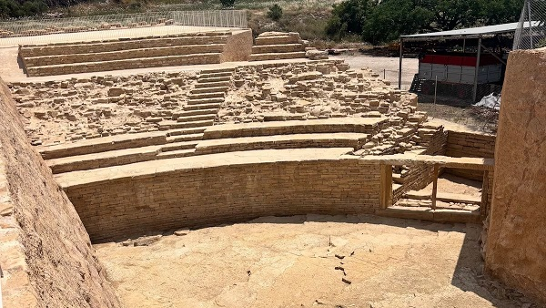
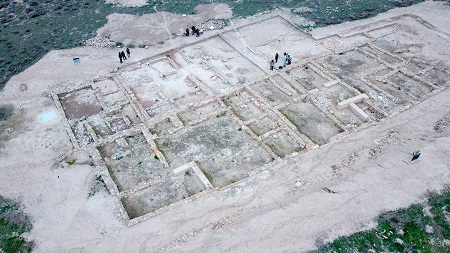

|
JAÉN ROMANO
Jaén,
Aurgi. La presencia humana en la actual ciudad, está documentada desde la etapa
calcolítica. El Cerro de la Plaza de Armas de Puente Tablas, un oppidum ibérico
de Puente Tablas, que fue abandonado antes de las Guerras Púnicas. Las
excavaciones realizadas han determinado la existencia de un muro escalonado, con
torres avanzadas de grandes sillares en lo que se ha dado en llamar como Plaza
de Armas. Los restos arqueológicos también testimonian la presencia ibérica en
las proximidades del Castillo de Santa Catalina. En el 207 a.e.c. la ciudad es
tomada por Escipión y arrebatandola a los cartagineses. Tito Livio la
describiría como Auringi y Oringe por Estrabón; Polibio, la conoció como Elinga
y el Concilio de Ilíberis, como Advinge, Plinio como Nijis u Oringis. No era en
realidad una ciudad demasiado grande. Se levantaría alrededor del raudal de la
Magdalena. Se conservan restos de estelas y mosaicos. También han aparecido
restos de esta etapa en el yacimiento de Marroquíes Bajos. Vespasiano o Tito le
dieron el rango de municipio con derecho latino, conociéndose en adelante como
Municipio Flavio Aurgitano o Aurgi. Conjunto Arqueológico de Cástulo, Linares Oppidum de Maquiz
en Mengibar,
se trata de un asentamiento ibero-romano, que conserva importantes restos de
época romana. La ciudad de Iliturgi, "Colonia Forum Iulium Iliturgi". Junto a
sus murallas murió Publio Cneo Escipión en la Segunda Guerra Púnica. Destaca el
tesoro de Mengíbar. Porcuna, Obulco. Poblada desde la Prehistoria. Cuartel general o castrum de Julio César, donde se preparó la campaña contra los hijos de Pompeyo. César le concedió el título de "Municipio Pontificiense" en unión de Obulco Urvs Victrix Nobilis (Ciudad Vencedora y Noble) y la autorización para que siguiera haciendo uso de la Ceca Iberia, como atestiguan las numerosas inscripciones aparecidas en su suelo. Se pueden visitar las excavaciones de la necrópolis del Cerrillo Blanco, la ciudad ibero-romana de la antigua Obulco en la zona de San Benito-La Peñuela. Julio de 2017, los trabajos arqueológicos han sacado a la luz en Porcuna un anfiteatro romano del siglo I a.e.c., que tras las primeras catas de exhumación, los expertos afirman que es uno de los coliseos más importantes de España. Foto ayto. Porcuna
 En junio de 2021, la excavación en la Cisterna de La Calderona de Porcuna descubre una calle romana. Se trata de un monumento “excepcional y singular, que es, a día de hoy, el edificio mejor conservado de la gigantesca ciudad de Obulco". Data siglo I a.e.c. Visitable a partir del 11/07/24.
En Quesada, La Villa de Bruñel, explotación agraria con un rico repertorio de mosaicos. Habitada siglos II-IV cuando se transformo en una basílica paleocristiana. En junio de 2018 hallan en la villa romana de Bruñel los restos de una villa anterior datada en el siglo I. A demás de la de Bruñel, se han localizado otras villas, como las de los parajes el Allozar, Voladero, los Rosales y Aguas Calientes, que muestran una intensa ocupación del territorio en época imperial. Entre los términos municipales de Beas de Segura y Chiclana de Segura, se localiza el Puente Mocho. Puente romano sobre el río Guadalimar, de unos cien metros de longitud con seis arcos de medio punto. En Martos, Tucci. Poblada desde el Neolítico. La ciudad ibera de Tucci. En época de Augusto se convirtió en colonia romana con el nombre de Colonia Augusta Gemella. Destaca su lapidarium, los leones íbero-romanos del pilar de la fuente nueva, el reloj de sol del 20 a.e.c, los hornos romanos, los restos de villas romanas, mosaicos, monedas, cerámica, armas, retratos en mármol...En julio de 2021, Martos recupera los restos arqueológicos de la basílica del siglo IV y la calzada romana. Toya. Tugia. Destaca la cámara sepulcral ibérica de Toya, única en España. Es una tumba cuadradangular, de unos cinco metros de lado, a la que se accede descendiendo por una rampa curvada. Está dividida en tres naves, con poyetes y mesas sirvieron para colocar las urnas cinerarias y otros objetos cerámicos que conformaban del ajuar funerario. Son curiosas las puertas en arco y con un dintel de gran valor arquitectónico. En el Museo Provincial de Jaén se exhiben los objetos funerarios procedentes de esta sepultura, entre los que destaca una rueda de carro. La Tugia de los romanos. Cerca de la confluencia del Guadiana Menor con el Guadalquivir, se localiza el SALTUS TUGIENSIS que los romanos situaban junto al MONSARGENTARIOS (Monte de la Plata), identificado por algunos historiadores como la Sierra de Cazorla. Las obras de un tramo de la Autovía del Olivar, situado en los términos municipales de Baeza y Begíjar, han dejado al descubierto los restos arqueológicos de una serie de infraestructuras hidráulicas de la época imperial romana que pueden considerarse como uno de los mejores exponentes de este tipo de ingeniería del periodo romano en la provincia de Jaén. En Alcalá la Real, destaca el yacimiento arqueológico "Domus Herculana". Los restos principales des esta villa romana, datan del siglo I al III. Una segunda fase de ocupación en los siglos IV y V. El yacimiento arqueológico de la ciudad romana de Isturgi en Los Villares de Andújar. Del siglo VII a.e.c. al siglo III o IV. En julio de 2025 durante el proceso de excavación de una megaplanta solar junto a la carretera de La Parrilla. Según algunos arqueólogos, los restos del acueducto romano excavado, se asocia a la antigua ciudad de Isturgi. En Úbeda se localiza el yacimiento arqueológico de la ciudad romana de Salaria, más conocido como “Úbeda la Vieja”. Un estudio revela el descubrimiento de un circo y probablemente también un anfiteatro romano. También se ha localizado en el propio armazón de piedra del puente romano existente sobre el río Guadalquivir, conocido como el "puente viejo". En Espeluy, en octubre de 2020, se está realizando un sondeo arqueológico en 23 silos romanos hallados en la localidad para su posterior restauración, rehabilitación y puesta en valor. En Rus en octubre de 2020, el Instituto de Arqueología Ibérica de la Universidad de Jaén, ha identificado una villa romana y varios asentamientos íberos en las excavaciones arqueológicas que lleva a cabo en el entorno del pantano de Giribaile, al bajar de nivel. En marzo de 2021, las excavaciones realizadas en el yacimiento romano de El Altillo han documentado la existencia de una villa romana, ocupada entre los siglos I y V, aunque la mayor parte de las construcciones datan del siglo IV. Ha aparecido un gran mosaico, un alfar, almazara y también se ha delimitado un espacio funerario, una necrópolis asociada a esta época bajoimperial. El poblado íbero de Puente Tablas, datado en los siglos V-IV a.e.c. Foto Universidad de Jaen.

En octubre de 2020 el horno tejar de época romana hallado en Villacarrillo, durante las obras de construcción de la autovía A-32, ha sido trasladado en camión al conjunto arqueológico ibero-romano de Cástulo.
|